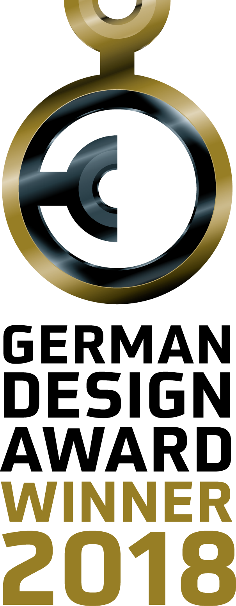
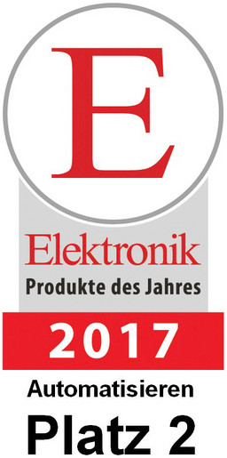
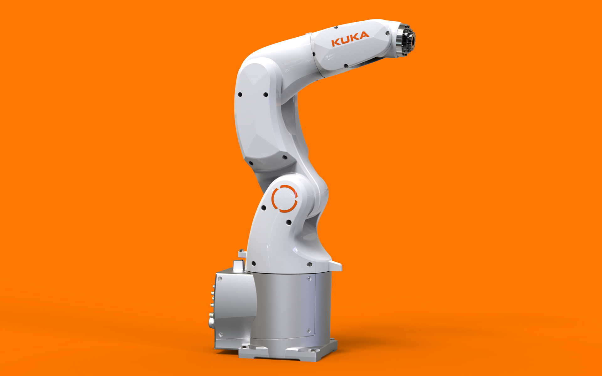
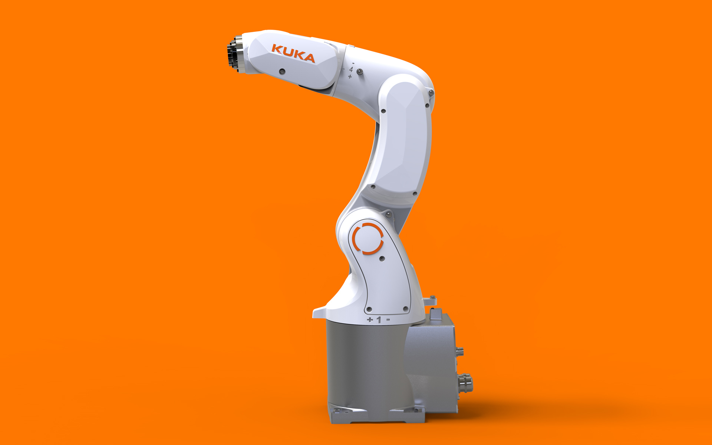
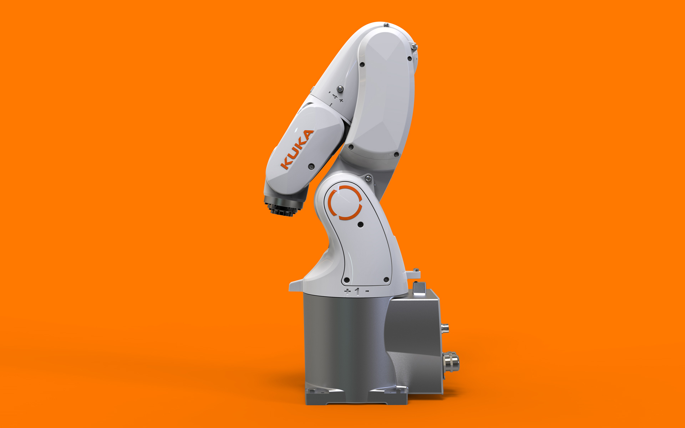
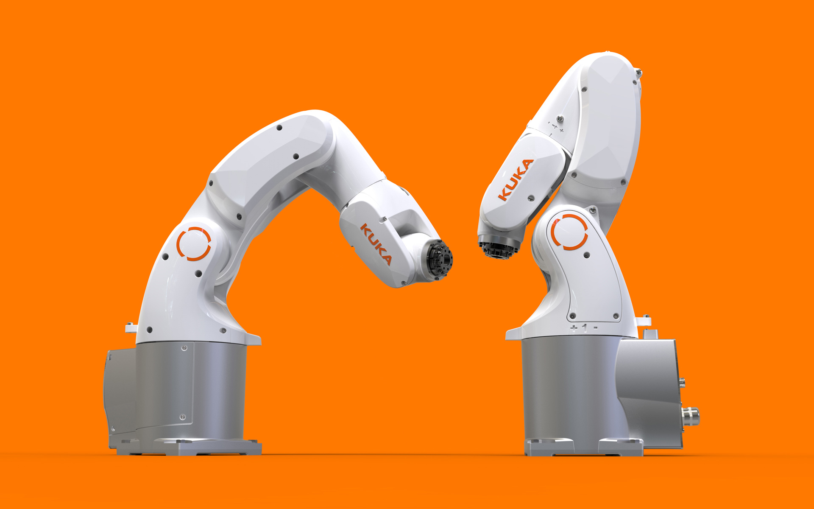

KUKA KR 3 AGILUS
Small Robot
KUKA KR 3 AGILUS
Kleinrobotik
The requirements on the new small robot became the challenge for the development team:
- It should become the fastest robot in its class with shortest cycle times
- An extreme precision with a repeatability of ± 20 micrometers was demanded
- All electric cables should be installed well-protected inside the body for a maximal robot agility
- The robot must have compact dimensions and a very small footprint to save space and material costs
- It is designed and optimized for the production of the smallest components and products for the 3C market (Computer, Communications, Consumer Electronics), for ex. smart-phones
- The robot must be absolutely cost-effective, it should require minimal maintenance and should be highly reliable
The result is the KR 3 AGILUS which fulfills all requirements and puts a new benchmark in its class. The
design shows the stunning agility and the remarkable performance of the machine. It also confirms the
sustainability. To keep the CI its appearance was adapted to the KUKA product family in spite of
conceptual constructive differences to the bigger machines.
Selić Industriedesign service: Design concept, design consultation, design sketches, CAD design support,
CAD freeform modeling, design refinement, processing of design data for the engineering department
Die Anforderungen an den neuen Kleinroboter wurden für das Entwicklungsteam zur Herausforderung:
- Der schnellste Roboter seiner Klasse mit kürzesten Taktzeiten
- Extreme Präzision mit einer Wiederholgenauigkeit von nur ± 20 Mikrometern
- Geringes Eigengewicht für hohe Beschleunigungswerte
- Kompakte Maße und kleine Aufstellfläche für raumsparende Automatisierungszellen
- Optimiert für den 3C-Markt (Computer, Communications, Consumer Electronics) zur Herstellung und Montage kleinster Bauteilkomponenten und Produkte, z.B. Smartphones oder Computer-Mainboards
- Geschützter, innenliegender Kabelsatz und Energiezuführung bis zur Schnittstelle in der Roboterhand—das ermöglicht flexible Bewegungen bei kleinsten Störkonturen für höchste Automatisierungsdichte
Das Ergebnis ist der KR 3 AGILUS, der alle Anforderungen erfüllt und in seiner Klasse eine neue
Benchmark setzt. Das Design betont die Agilität des Roboters und seine maximale Performance auf engstem
Raum. Sein Erscheinungsbild konnte trotz konzeptioneller Unterschiede an die KUKA-Produktfamilie
angepasst werden. Dank der ausgeklügelten Konstruktion ist er kostenoptimiert, wartungsarm und höchst
zuverlässig.
Selić Industriedesign Dienstleistung: Designkonzept, Designberatung, Designentwürfe,
CAD-Designunterstützung, CAD-Freiform-Modellierung und Detailgestaltung, Aufbereitung von Designdaten
für die Konstruktion




Images © Selić Industriedesign